Chức năng của Nhân viên
Đặt bàn
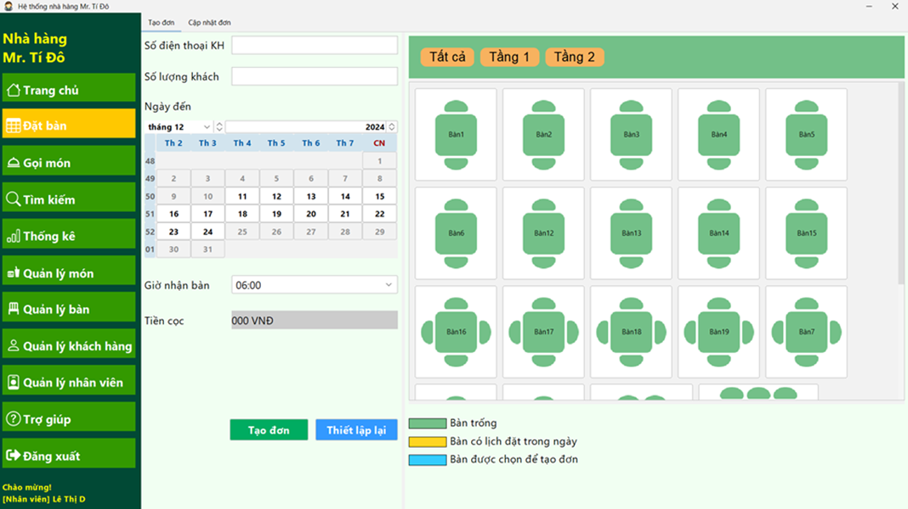Tạo đơn đặt bàn
Bước 1: Nhập đầy đủ thông tin phía bên trái (có thể để trống số lượng khách), chọn các bàn để tạo đơn.
Bước 2: Chọn nút “Tạo đơn” để lưu đơn. Khi thêm thành công thì sẽ có thông báo.
Tuỳ chọn hỗ trợ: Có thể chọn nút “Thiết lập lại” để thiết lập lại giao diện ban đầu
Cập nhật đơn đặt bàn
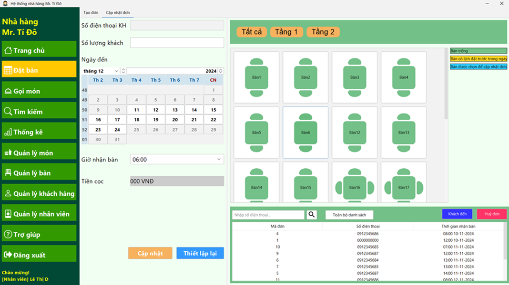Cập nhật thông tin đơn
Bước 1: Từ danh sách, chọn đơn đặt bàn cần thay đổi
Bước 2: Thay đổi các thông tin cần thiết và chọn nút “Cập nhật”, sau đó xác nhận để lưu thông tin thay đổi
Xác nhận khách đến
Bước 1: Từ danh sách, chọn đơn đặt bàn cần thay đổi
Bước 2: Chọn nút “Khách đến” và xác nhận để chuyển trạng thái đơn đặt bàn
Huỷ đơn
Bước 1: Từ danh sách, chọn đơn đặt bàn cần thay đổi
Bước 2: Chọn nút “Huỷ đơn” và xác nhận huỷ để huỷ đơn đặt bàn
Tuỳ chọn hỗ trợ
Thiết lập lại: Chọn nút “Thiết lập lại” để làm mới giao diện
Tìm kiếm: Nhập số điện thoại vào ô tìm kiếm và chọn biểu tượng kính lúp để lọc danh sách đơn đặt bàn theo số điện thoại
Tải lại danh sách: Chọn nút Toàn bộ danh sách để tải lại toàn bộ danh sách
Quản lý bàn
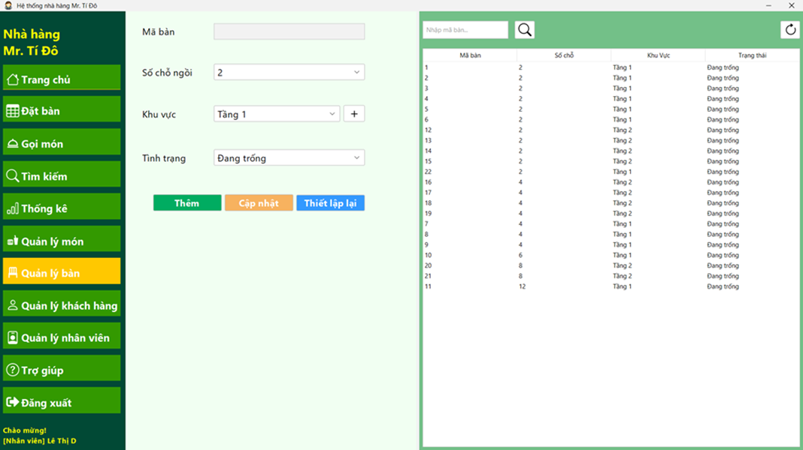Thêm bàn mới
Bước 1: Nhập đầy đủ thông tin phía bên trái (không nhập mã bàn)
Bước 2: Chọn nút “Thêm” để thêm bàn mới. Sau khi thêm thành công, thông tin bàn mới sẽ được thêm vào danh sách bên phải
Cập nhật thông tin bàn
Bước 1: Chọn 1 bàn từ danh sách bên phải. Thông tin bàn được chọn sẽ được hiển thị vào form bên trái
Bước 2: Thay đổi các thông tin cần thiết của bàn
Bước 3: Chọn nút “Cập nhật” để lưu thông tin thay đổi. Sau khi cập nhật thành công sẽ có thông báo và thông tin mới thay đổi được cập nhật vào danh sách.
Tuỳ chọn
Thiết lập lại: Chọn nút “Thiết lập lại” để làm mới giao diện
Tìm kiếm: Nhập mã bàn vào ô tìm kiếm rồi chọn biểu tượng kính lúp để lọc bàn trong danh sách
Tải lại danh sách: Chọn biểu tượng mũi tên xoay tròn ở góc trên bên phải để tải lại toàn bộ danh sách
Thêm khu vực mới: Chọn biểu tượng dấu + ở hàng Khu vực. Sau đó nhập tên khu vực vào khung nhập liệu được hiển thị và chọn “Đồng ý” để thêm khu vực mới
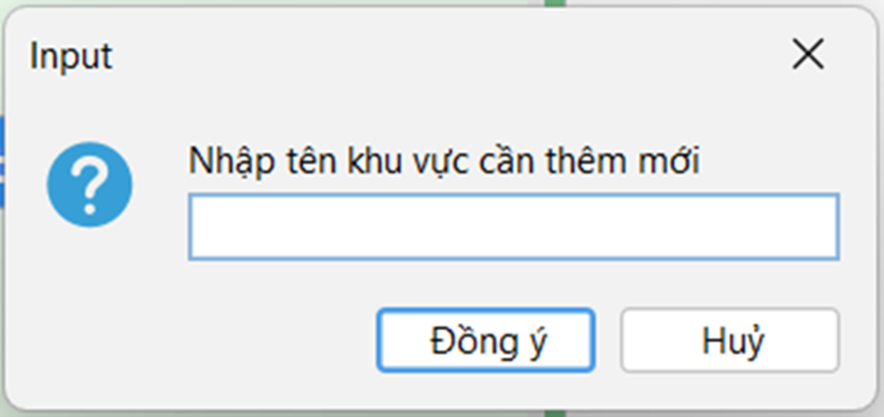Gọi món
Thêm đơn món mới
Bước 1: Chọn một bàn trống tại giao diện “Sơ đồ bàn” để tạo đơn gọi món. Nhân viên lọc các bàn theo khu vực bằng cách nhấn vào các nút có tên khu vực tương ứng.
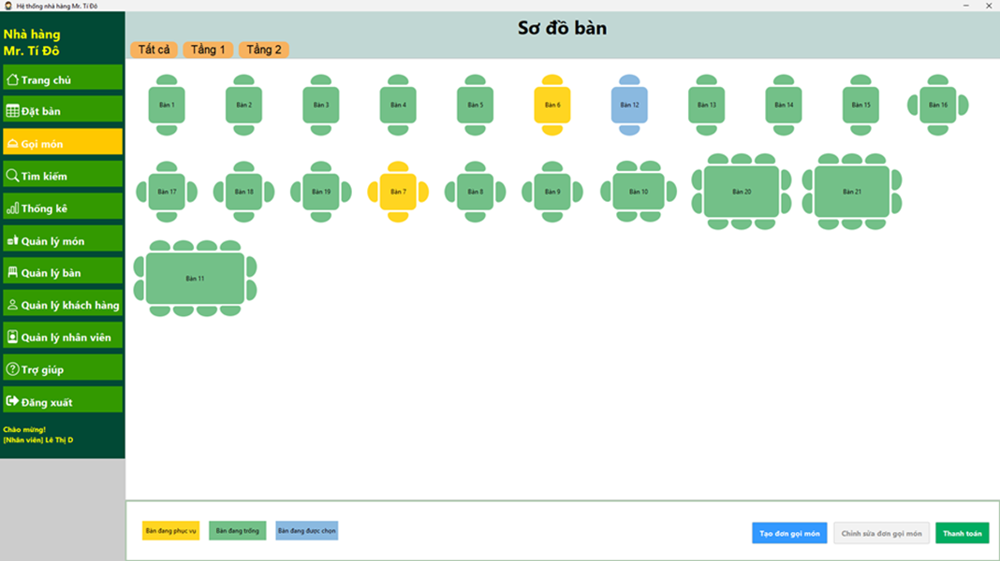Bước 2: Nhấn nút "Tạo đơn gọi món", hệ thống sẽ chuyển sang màn hình gọi món để nhân viên thêm các món ăn vào đơn. Ở giao diện này sẽ hiển thị thông tin về đơn gọi món (mã đơn gọi món, ngày giờ tạo đơn, mã bàn tạo đơn) ở phần bên phải màn hình.
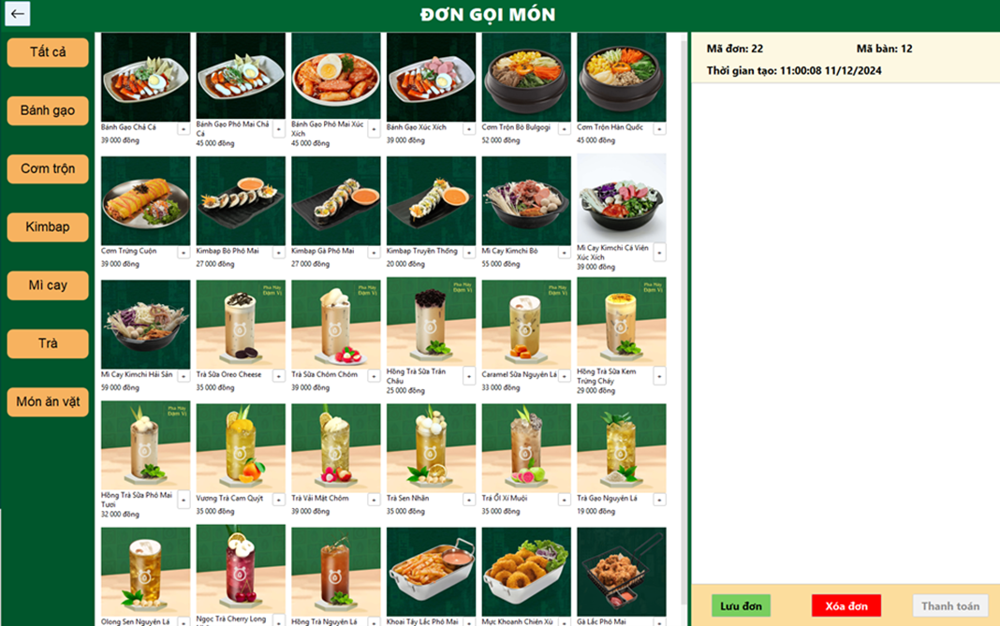Bước 3: Thêm món bằng cách nhấn dấu cộng dưới các món cần thêm. Nhân viên có thể lọc các món theo phân loại bằng cách nhấn các nút có tên phân loại tương ứng.
Lưu ý:
Đối với món nước thì cần chọn đầy đủ các phân loại có trong cửa sổ tùy chọn phụ dành cho các món nước và nhập số lượng món cần gọi.
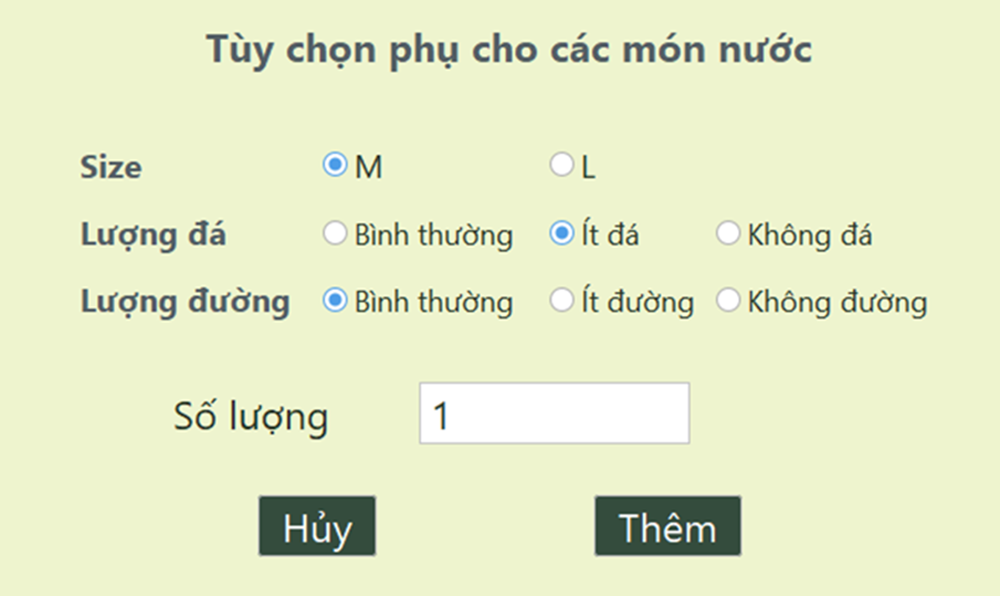Đối với món mì thì cần chọn đầy đủ các phân loại có trong cửa sổ tùy chọn phụ dành cho các món mì và nhập số lượng món cần gọi.
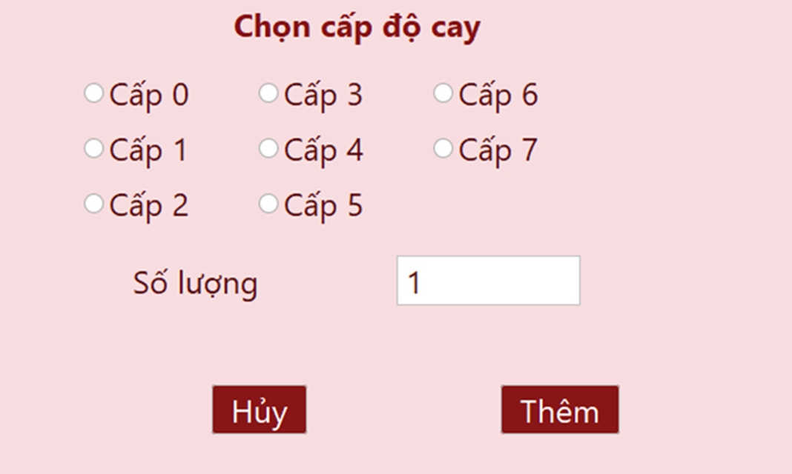Đối với món thuộc phân loại khác mì và nước thì cần nhập số lượng món cần gọi.
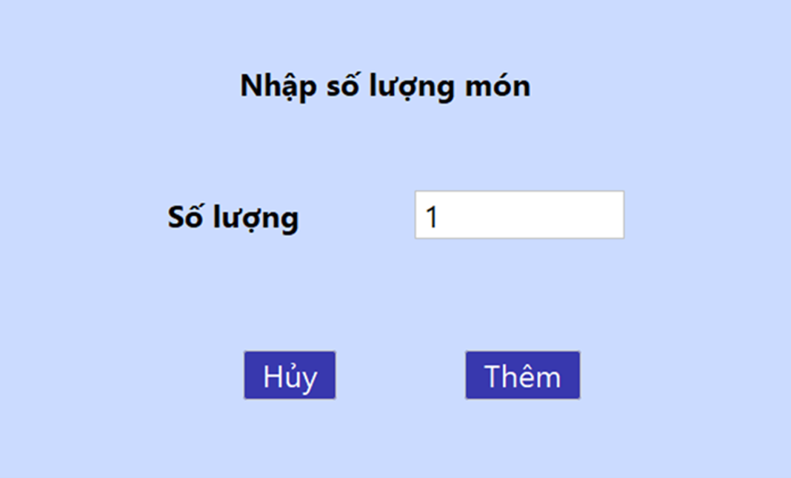Bước 4: Nhấn nút thêm sau khi đã nhập đầy đủ thông tin. Món sau khi thêm sẽ hiển thị trong đơn gọi món nằm ở bên phải màn hình
Bước 5: Nhấn nút lưu đơn để lưu thông tin đơn gọi món hiện tại.
→ Nhân viên sẽ được chuyển lại giao diện “Sơ đồ bàn”. Bàn đã chọn để tạo đơn sẽ chuyển màu từ xanh lá (đang trống) sang màu vàng (đang phục vụ).
Sửa thông tin đơn gọi món
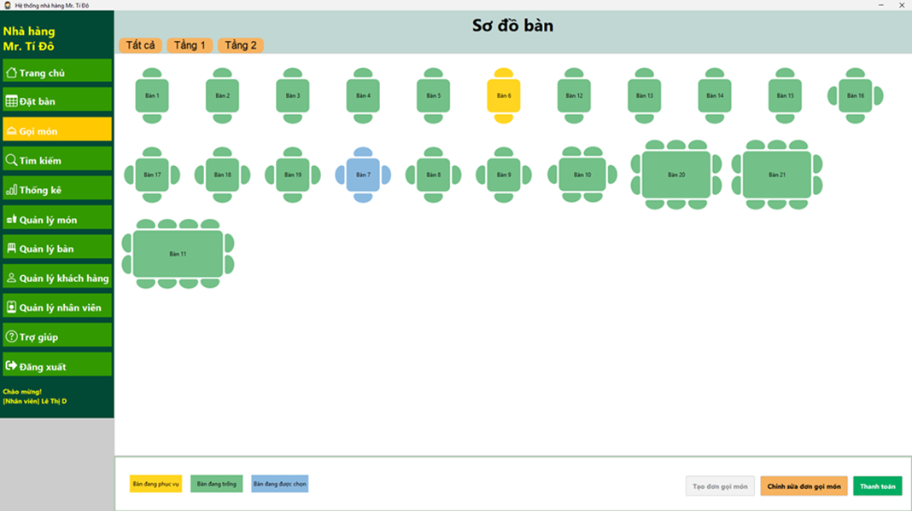Bước 1: Chọn bàn cần chỉnh sửa đơn gọi món tại giao diện “Sơ đồ bàn” để thực hiện chính sửa. Nhân viên lọc các bàn theo khu vực bằng cách nhấn vào các nút có tên khu vực tương ứng.
Bước 2: Nhấn nút "Chỉnh sửa đơn gọi món", hệ thống sẽ chuyển sang màn hình gọi món để nhân viên chỉnh sửa đơn đã có
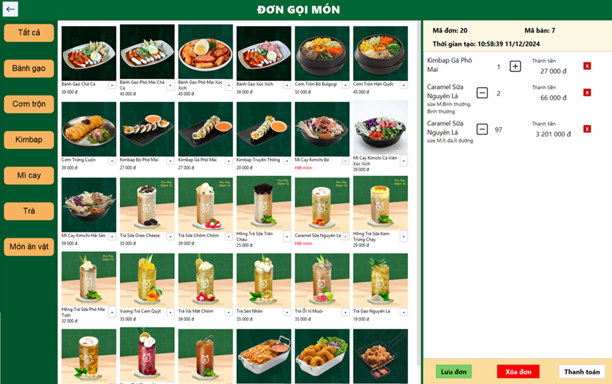Bước 3: Tại giao diện này, nhân viên được phép thêm món mới vào đơn, xóa món khỏi đơn bằng cách nhấn nút X màu đỏ ở món cần xóa. Ngoài ra nhân viên sử dụng các nút tăng giảm để thay đổi số lượng món đã có trong đơn. Nhân viên có thể lọc các món theo phân loại bằng cách nhấn các nút có tên phân loại tương ứng.
Lưu ý:
Các nút tăng sẽ biến mất khi số lượng món cần gọi bằng với số lượng tồn của món hiện có trong thực đơn và nút dấu trừ cũng biến mất khi số lượng món trong đơn là 1.
Nhân viên có thể chọn nút xóa đơn để xóa đơn gọi món khi cần thiết.
Bước 4: Nhấn nút "Lưu đơn" để lưu các chỉnh sửa đã thực hiện cho đơn gọi món.
→ Nhân viên sẽ được chuyển lại giao diện “Sơ đồ bàn”. Bàn đã chọn để tạo đơn sẽ chuyển màu từ xanh lá (đang trống) sang màu vàng (đang phục vụ).
Thanh toán cho đơn gọi món
Bước 1: Chọn các bàn cần thanh toán tại giao diện “Sơ đồ bàn”
Lưu ý: Trong trường hợp thanh toán cho nhiều bàn và có nhiều đơn đặt bàn, hãy chọn từng bàn riêng lẻ trong mỗi đơn đặt bàn để tiến hành thanh toán cho từng đơn.
Bước 2: Chọn nút thanh toán tại giao diện “Sơ đồ bàn”. Hoặc tại giao diện đơn gọi món nhân viên nhấn nút thanh toán để tiến hành thanh toán nhanh khi không có sự thay đổi trong đơn gọi món. Nhân viên được chuyển qua giao diện “Thanh toán”.
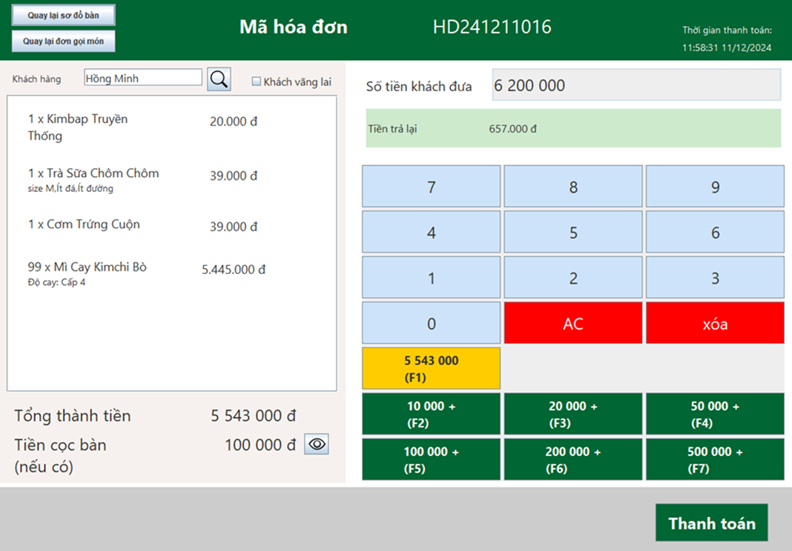Bước 3: Khi giao diện hiển thị, hệ thống sẽ cung cấp thông tin chi tiết về mã hóa đơn thanh toán, thời gian thanh toán, tên và số lượng các món đã gọi, cùng với tổng số tiền của đơn gọi món.
Lưu ý:Trong trường hợp khách hàng đã đặt bàn trước và thực hiện thanh toán cho bàn đã đặt, hệ thống sẽ hiển thị thêm số tiền cọc đã thanh toán và tên khách hàng để nhân viên có thể hoàn trả tiền cọc cho khách hàng và xử lý thanh toán mà không cần phải tìm kiếm thông tin khách hàng. Nhân viên xem đơn đặt bàn nhanh bằng cách nhấn vào nút kế bên tiền cọc để xem một số thông tin của đơn đặt bàn. Bỏ qua bước 4 và thực hiện bước 5 trong trường hợp này.
Bước 4: Tiến hành nhập tên khách hàng để tìm kiếm khách hàng trong hệ thống. Nếu khách hàng chưa có dữ liệu trong hệ thống, nhân viên cần thực hiện thêm khách hàng trước để tiến hành thanh toán. Trong trường hợp khách từ chối cung cấp thông tin thì nhân viên chọn mục “khách vãng lai” để tiếp tục thanh toán.
Bước 5: Nhập số tiền khách đưa bằng các nút phím tắt hoặc bằng bàn phím số.
Bước 6: Nhấn nút thanh toán sau khi trả lại tiền thừa cho khách (nếu có) để in hóa đơn.
Bước 7: Chọn nơi lưu hóa đơn để in. Nếu khách hàng không muốn in hóa đơn thì nhân viên bấm chọn không khi có thông báo “Bạn có muốn in hóa đơn không?”.
→ Kết thúc quá trình thanh toán, hệ thống hiển thị lại giao diện “Sơ đồ bàn”. Bàn được thanh toán sẽ tự đổi màu từ màu vàng (đang phục vụ) thành xanh lá (đang trống).
Quản lý món
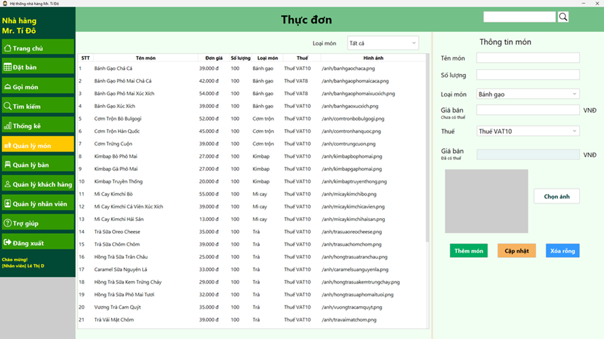Thêm món mới
Bước 1: Nhập đầy đủ thông tin món cần thêm vào các ô nhập liệu, các ô tùy chọn mặc định là phân loại đầu tiên. Khi muốn thêm ảnh thì nhấn nút chọn ảnh và chọn ảnh trong thư mục đã lưu. Ảnh được chọn sẽ hiển thị ở ô màu xám kế nút chọn ảnh. Nếu nút “Thêm món” không hiển thị màu xanh thì cần bấm xóa rỗng trước khi nhập thông tin để thêm món.
Bước 2: Chọn nút thêm món sau khi điền đầy đủ thông tin. Khi thêm thành công thì món mới sẽ được hiển thị trong bảng dữ liệu
Sửa thông tin món
Bước 1: Trước khi chọn món ở trong bảng. Nút “Cập nhật” sẽ bị vô hiệu hóa. Chọn món đã có từ trong bảng dữ liệu, nút “Cập nhật” . Lúc này nút “Thêm món” sẽ bị vô hiệu hóa đến khi hoàn thành cập nhật thông tin món.
Bước 2: Nhập thông tin cần thay đổi tương ứng trong các ô thông tin.
Bước 3: Chọn nút “Cập nhật” để lưu các thông tin đã sửa. Khi sửa thành công thì món mới sẽ được thêm vào bảng.
Lọc danh sách các món theo phân loại
Bước 1: Chọn phân loại cần lọc trong ô lựa chọn loại món.
Bước 2: Chọn một phân loại món có trong danh sách.
Bước 3: Kết quả trả về là bảng dữ liệu gồm các món thuộc phân loại đó.
Tìm món
Bước 1: Nhập tên món cần tìm vào ô kế nút kính lúp.
Bước 2: Nhấn nút tìm có hình kính lúp.
Bước 3: Nếu tìm thấy món phù hợp thì hiển thị thông tin món trong bảng. Nếu không tìm thấy hệ thống sẽ thông báo “Không tìm thấy món phù hợp!”.
Thêm loại món
Bước 1: Tại ô loại món trong form thông tin món, chọn vào mục cuối cùng có tên là “Chỉnh sửa loại món”
Bước 2: Một cửa sổ về thông tin các phân loại đã có được hiển thị như sau:
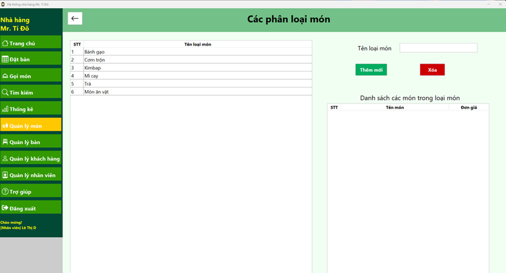Bước 3: Nhập tên loại món cần thêm.
Bước 4: Nhấn nút thêm.
Bước 5: Phân loại món mới được thêm thành công sẽ hiển thị trong bảng dữ liệu ở cửa sổ “Các phân loại món” và được thêm vào các ô lựa chọn ở cửa sổ “Thực đơn” để sử dụng.
Xóa loại món
Bước 1: Tại ô loại món trong form thông tin món, chọn vào mục cuối cùng có tên là “Chỉnh sửa loại món”
Bước 2: Một cửa sổ về thông tin các phân loại đã có được hiển thị như sau:
Bước 3: Chọn loại món cần xóa từ bảng.
Lưu ý: Trước khi thực hiện xóa, cần đảm bảo không có món nào thuộc loại món này. Nếu vẫn còn món trong loại món, hệ thống sẽ không cho phép xóa.
Bước 4: Nhấn nút xóa. Loại món được chọn sẽ bị xóa và không còn hiển thị trong bảng dữ liệu.
Thêm thuế mới
Bước 1: Tại ô chọn thuế trong form thông tin món, chọn vào mục cuối cùng có tên là “Chỉnh sửa thuế”
Bước 2: Một cửa sổ về thông tin các thuế đã có được hiển thị như sau:
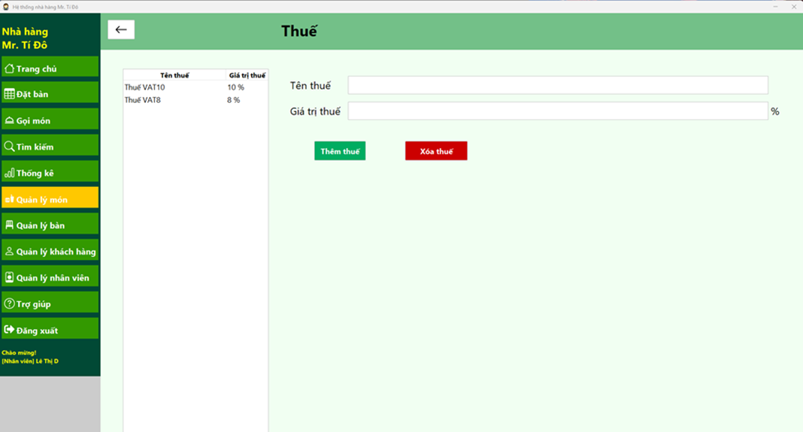Bước 3: Nhập tên và giá trị thuế mới cần thêm.
Bước 4: Nhấn nút thêm.
Bước 5: Thuế mới được thêm thành công sẽ hiển thị trong bảng dữ liệu ở cửa sổ “Thuế” và được thêm vào các ô lựa chọn thuế ở cửa sổ “Thực đơn” để sử dụng.
Xóa thuế
Bước 1: Tại ô chọn thuế trong form thông tin món, chọn vào mục cuối cùng có tên là “Chỉnh sửa thuế”
Bước 2: Một cửa sổ về thông tin các thuế đã có được hiển thị như sau:
Bước 3: Chọn thuế cần xóa từ bảng dữ liệu.
Lưu ý: Trước khi thực hiện xóa, cần đảm bảo không có món nào áp dụng thuế này. Nếu vẫn còn món được áp dụng thuế, hệ thống sẽ không cho phép xóa.
Bước 4: Nhấn nút xóa. Thuế được chọn sẽ bị xóa và không còn hiển thị trong bảng dữ liệu.
Thống kê
Giao diện thống kê dành cho nhân viên
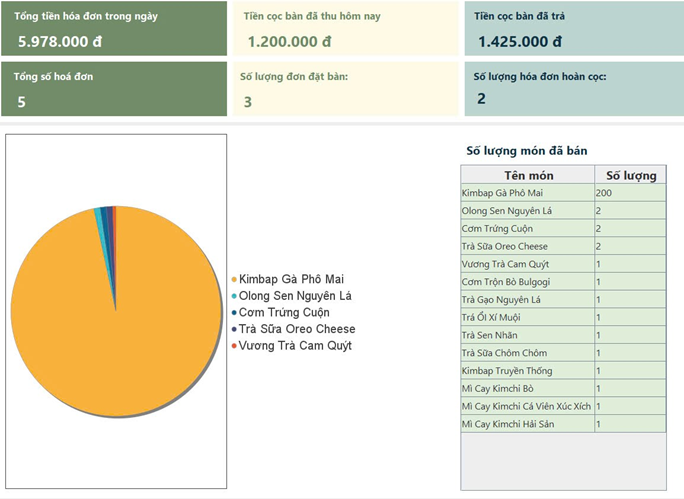Sẽ tự động hiện thông số và biểu đồ với dữ liệu được lấy trong ngày.
Tìm kiếm
Tìm kiếm đơn đặt bàn
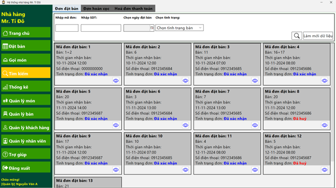Bước 1: Nhập từ khoá vào ô tìm kiếm và (hoặc) chọn ngày, tình trạng của đơn đặt bàn (nếu cần)
Bước 2: Nhấn nút biểu tượng tìm kiếm
Bước 3: Nhấn nút Làm mới dữ liệu tải lại danh sách đơn đặt bàn
Tìm kiếm đơn hoàn cọc
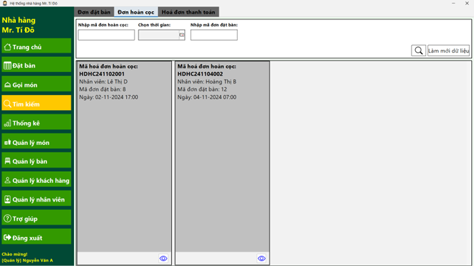Bước 1: Nhập từ khoá vào ô tìm kiếm và (hoặc) chọn ngày
Bước 2: Nhấn nút biểu tượng tìm kiếm
Bước 3: Nhấn nút Làm mới dữ liệu tải lại danh sách đơn đặt bàn
Tìm kiếm hoá đơn thanh toán
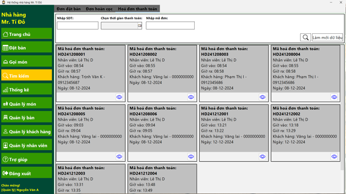Bước 1: Nhập từ khoá vào ô tìm kiếm và (hoặc) chọn ngày
Bước 2: Nhấn nút biểu tượng tìm kiếm
Bước 3: Nhấn nút Làm mới dữ liệu tải lại danh sách đơn đặt bàn
Quản lý khách hàng
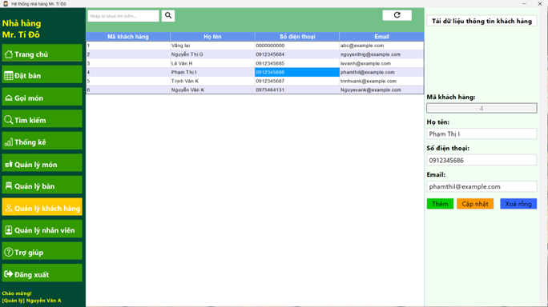Thêm khách hàng mới
Bước 1: Nhập đầy đủ thông tin gồm: họ tên, số điện thoại và email
Bước 2: Nhấn nút thêm
Cập nhật khách hàng
Bước 1: Chọn một khách hàng trong danh sách
Bước 2: Chỉnh sửa thông tin của khách ở ô tương ứng
Bước 3: Nhấn nút cập nhật
Tìm kiếm khách hàng
Bước 1: Nhập từ khoá cần tìm như: mã khách hàng, họ tên, số điện thoại, email
Bước 2: Nhấn nút biểu tượng tìm kiếm
Bước 3: Nhấn nút biểu tượng làm mới danh sách
Chức năng của Quản lý
Quản lý nhân viên
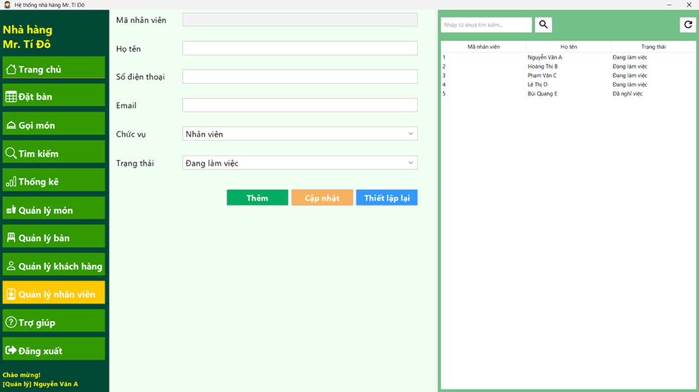Thêm nhân viên
Bước 1: Nhập đầy đủ thông tin vào form bên trái
Bước 2: Chọn nút “Thêm” để lưu thông tin nhân viên mới. Tài khoản của nhân viên sẽ được tạo tự động với tên đang nhập là họ tên nhân viên viết liền không dấu (VD: LeNgocHuong), mật khẩu là ngày tạo nhân viên đó theo định dạng ddMMyyyy (VD: 13122024)
Cập nhật thông tin nhân viên
Bước 1: Chọn nhân viên cần cập nhật từ danh sách bên phải
Bước 2: Thay đổi các thông tin cần thiết của nhân viên
Bước 3: Chọn nút “Cập nhật” để lưu thông tin thay đổi. Sau khi cập nhật thành công sẽ có thông báo.
Tuỳ chọn hỗ trợ
Thiết lập lại: Chọn nút “Thiết lập lại” để làm mới giao diện
Tìm kiếm: Nhập mã nhân viên hoặc tên nhân viên vào ô tìm kiếm rồi chọn biểu tượng kính lúp để lọc nhân viên trong danh sách
Tải lại danh sách: Chọn biểu tượng mũi tên xoay tròn ở góc trên bên phải để tải lại toàn bộ danh sách
Thống kê
Giao diện thống kê dành cho quản lý
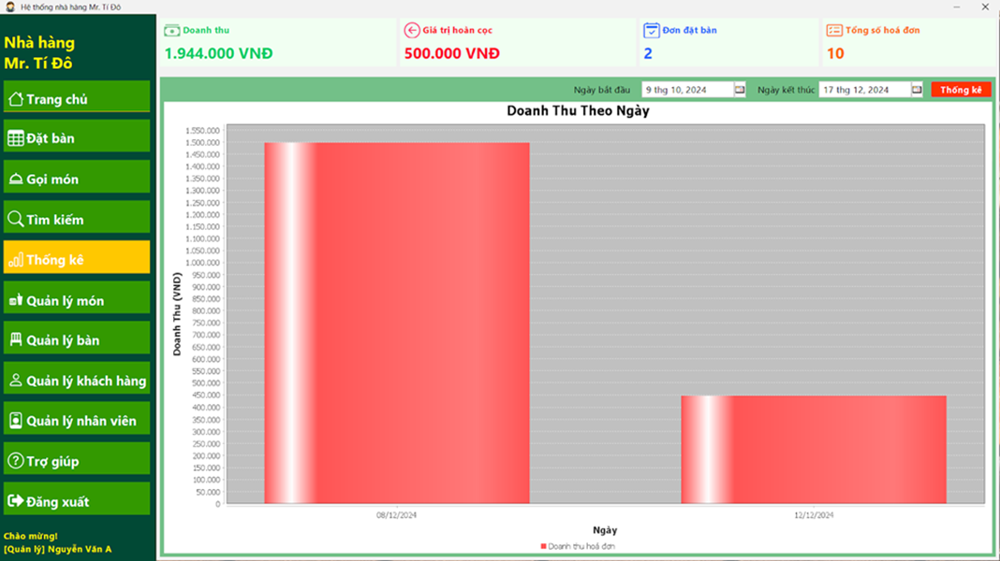Bước 1: Chọn ngày bắt đầu và ngày kết thúc để thống kê
Bước 2: Bấm nút thống kê để hiện biểu đồ thống kê
Hỗ Trợ
Nếu bạn gặp bất kỳ vấn đề nào trong quá trình sử dụng, hãy liên hệ với bộ phận hỗ trợ của chúng tôi:
- Email: support@restaurantmanagement.com
- Điện thoại: 1-800-555-0199
- Chat trực tuyến: Có sẵn trên trang web của chúng tôi